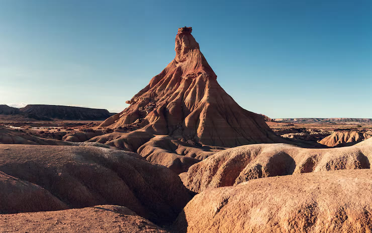

Trois
obstacles
Trois obstacles peuvent compromettre le tournage des Barreaux de Sable : l'accès aux Bardenas Reales, la météo et le financement. Chacun a des solutions concrètes à lancer dès maintenant.
Un court métrage de fiction d'environ quinze minutes, thriller psychologique et fantastique, projet Sup de Pub 2026–2027. Le tournage est prévu dans le désert des Bardenas Reales, en Navarre.
- 15
- minutes environ
- 1
- jour de repérage
- 4
- jours de tournage
- 6
- nuits sur place
- 9
- personnes
Obstacle 1
Impossible de tourner dans les Bardenas
Le désert est le décor du film : sans lui, la plaine, la crevasse et la falaise disparaissent.
Les Bardenas sont un parc naturel et une réserve de biosphère de l'UNESCO. L'accès y est réglementé, et il peut être fermé au public.
Causes possibles
- Une autorisation refusée, ou trop chère, auprès de la Comunidad de Bardenas Reales.
- Un accès fermé à nos dates : périodes de nidification des oiseaux, exercices militaires.
- Des conditions trop dures sur place : chaleur, vent, sable dans le matériel, zones isolées.

Castildetierra, BardenasSolutions
- Se renseigner en profondeur auprès des institutions sur place
La Navarra Film Commission, la Comunidad de Bardenas Reales, les offices de tourisme locaux. L'objectif : connaître les autorisations, les coûts, les zones accessibles, les périodes de fermeture et les règles du parc, le tout par écrit.
- Trouver des lieux de secours en France
- un paysage désertique ou aride en France : le Colorado provençal, les Ocres ;
- d'autres univers qui gardent le huis clos du couple perdu : une forêt, une carrière, des gorges.
- Adapter le film au lieu de secours
Garder les trois espaces, la plaine, la crevasse et la falaise, en les transposant dans le nouveau décor.
- Préparer l'équipe au terrain
Des housses anti-sable, les changements d'objectif à l'abri, beaucoup d'eau et une trousse de secours.
Obstacle 2
Une météo pluvieuse
Impacts
- Le style visuel. Le film repose sur une image solaire, chaude et contrastée. Un ciel gris casse le passage de la couleur au noir et blanc.
- L'accès. Le sol des Bardenas est argileux : après une averse, les pistes peuvent devenir boueuses, ou être fermées (à vérifier auprès du parc).
Solutions
- Faire de la pluie une force du film
Une averse dans le désert peut ajouter une autre dimension au court métrage, en écho à la dispute qui monte. Prévoir en amont quelles séquences pourraient l'intégrer.
- Prévoir des abris pour l'équipe
Des barnums, des tentes, des bâches, et un véhicule garé à proximité du décor.
- Protéger le matériel
Des housses de pluie pour la caméra et le son, des caisses étanches, des sacs pour les câbles et les batteries.
- Choisir les dates selon les statistiques météo
Puis surveiller les prévisions dix jours avant le départ.
- Utiliser la journée tampon
Si les pistes deviennent impraticables : six nuits sur place pour quatre jours de tournage laissent une marge.
Obstacle 3
Ne pas réunir les 5 750 €
Sans cet argent, il n'y a ni voyage ni tournage.
Ce qui est couvert : le bénévolat, notre propre matériel, les tarifs réduits.
Ce qu'il reste à payer
- Matériel son et lumière
- Hébergement 950 €
- Repas 600 €
- Transport 600 €
- Musique
- Assurances
- Autorisations
- Imprévus
Solutions
- Prévoir dès maintenant une version simplifiée du court métrage
Moins ambitieuse, mais tournable avec un budget réduit :
- un lieu plus proche, en France, pour diviser les frais de transport et d'hébergement ;
- moins de jours de tournage et une équipe plus légère ;
- moins de séquences et de décors, en gardant l'essentiel : le couple, les doubles et la montée de la dispute.
- Fixer une date limite
Si les 5 750 € ne sont pas réunis à cette date, on bascule sur la version simplifiée.
- Chercher quand même des financements pour la version complète
Un crowdfunding, une aide de Sup de Pub, des partenaires locaux en échange d'une visibilité au générique.
Synthèse
Pour chaque obstacle, ce qu'on lance tout de suite, et ce qu'on fait si ça ne passe pas.
Contacter la Navarra Film Commission pour fixer des dates réalistes, puis caler le budget dessus.
| Obstacle | Action prioritaire | Plan B |
|---|---|---|
| 01Bardenas inaccessibles | Se renseigner auprès des institutions sur place | Un lieu de secours en France : zone aride du Sud, forêt, carrière |
| 02Météo pluvieuse | Prévoir des abris pour l'équipe et le matériel | Intégrer la pluie au film |
| 035 750 € à trouver | Fixer une date limite pour le financement | La version simplifiée du court métrage |